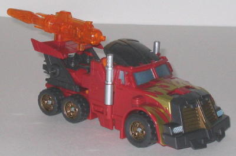
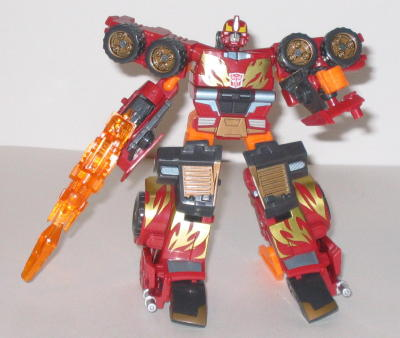

Rodimus
(Energon)
Rodimus
(Energon)


Allegiance
: Autobot
Size
: Deluxe
Difficulty of Transformation
: Medium
Difficulty of Powerlinx Transformation
:
Medium
Color Scheme
: Dark gray, flat orange,
brick red, chrome gold, dull gold, and some transparent orange, silver,
yellow, and metallic silverish blue
Powerlinx ports
: 2 (1 of them on
gun)
Rating
: 7.7
Vehicle mode is a futuristic
truck. This is an okay mode, although like many Energon Autobots, it does
suffer from some proportion problems. The main problem I have with this
mode is that the back half of the truck is too small when compared to the
front half- it makes Rodimus look almost chibi in this mode. They should
have elongated the back half of something similar to make Rodimus look
a bit more intimidating. If you ignore that, though, it's a pretty nice
mode. VERY nice flame decos on the front hoods, and there generally aren't
any large areas of one color to be found on Rodimus' entire form. The overall
color scheme itself is also pretty nice, and, of course, a throwback to
G1 Rodimus Prime
- red, gold, and orange, with
some dark gray thrown in here and there. (Although I wish it was just black
instead of gray, as the darker color would've worked a little better.)
The mold detailing itself is... passable, but I wouldn't call it anything
spectacular. Some areas, especially on the top of this mode, could have
used some more mechanical detailing. Although he does have some pretty
cool thrusters in the back... His gun placement in this mode also looks
a little odd- after all, who has a rocket engine on TOP of the back fin
of their car? Still, I suppose that if you have to put the gun somewhere
where it can easily be pulled off if one desires, that's a fairly good
place for it. One thing that DOES bug me about the back fin, though, is
that it tends to break apart into its two halves far too easily- I find
myself having to continually slide them back together. Rodimus' silver
Autobot Powerlinx symbol is on the left side of his vehicle mode, below
the windows.
Rodimus' paint detailing
picks up even more in his robot mode, and he's really eye-catching. However,
his proportions are, again, off. His hands are overly large, and he really
doesn't have any upper arms- just large shoulders attached to an infintesimal
ball joint piece which is in turn attached to his lower arms. Needless
to say, it looks a little... weird. There's also an obvious orange bar
coming out from behind his head, which doesn't make it look all that great
(although the head sculpt and detailing itself is wonderful). Easily my
biggest beef with his robot mode, though, are the legs. They're ridiculously
huge, even when compared to the other Energon Autobots. His truck grill
halves also obscure his upper leg parts, so it literally looks like half
of Rodimus' mass is made up out of his feet. It completely ruins the "spiffy
good guy" look he had going on. On the plus side, though, he DOES have
good articulation- he can move at the shoulders, elbows (if you can call
them that), hips, and knees. Many of these can also move at more than one
point, so you can get him into a great number of poses. Rodimus' gun that
comes with him is your standard missile-firing trigger gun.


Rodimus' upper Powerlinx
mode is a joke. Now it's his arms that are ludicrously huge, and they also
suffer form the overly-large lower arms that so many Powerlinx forms have.
Only this time, they're even larger than that. And the hands are still
just flat carvings in the lower arms. Rodimus' regular arms are used as
guns mounted behind his head, and although they look okay, it's still too
obvious that they're his regular arms. He also can't move nearly as much
as I'd like him to in this mode.
As the lower half of
a Powerlinx robot, Rodimus fares a little better, seeing as how his feet
are more in proportion to that of a larger 'bot (although even now, they're
still a little too big). However, the entire top half of his regular robot
mode just hangs off his back unceremoniously as a big extra, and that's
a pretty big thing to ignore. He makes fairly well-articulated legs, though.
Rodimus is a very nice
homage to the original, but once you get past the fact that "OMG IT'S RODIMUZZZ!",
you realize that it's not that spectacular of a toy (although still better
than many of the Powerlinking Autobots). If out-of-whack proportions bug
you, I wouldn't get him; otherwise, I'd probably mildly recommend him.
Rodimus Bio
:
MOTTO: "I can take down any Decepticon
without getting a scratch."
Rodimus is a wild, rebellious young
Autobot and foreman to the Omnicons. His taste for danger is almost greater
than his sense of style. He is an aggressive, headstrong young warrior
who will not think twice about rushing into battle. Rodimus is able to
powerlinx with his Autobot brother, Inferno. In vehicle mode, he becomes
a semi-truck capable of great speeds. Rodimus' primary weapon is a powerful
energon cannon, which he often uses to teach the Decepticons two very important
battle maneuvers... run and hide.
Strength: 8.0
Intelligence: 8.0
Speed: 9.0
Endurance: 7.0
Rank: 8.0
Courage: 9.0
Fireblast: 8.0
Skill: 8.0
Review by Beastbot
Back to Transformers:
Energon Index